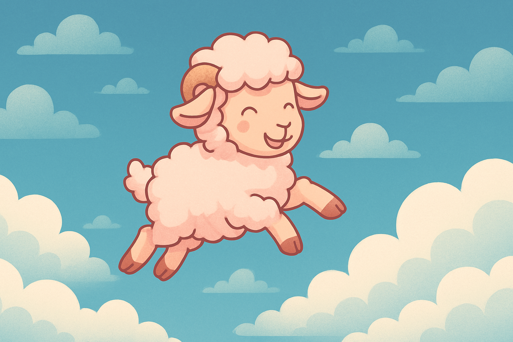

Lütfen başınızı çemberin içine alacak şekilde konumlandırın. Başınızın açılı veya eğik olmamasına dikkat edin. Görüntüyü yakalamak için "Görüntüyü Yakala" butonuna basın.
Görüntüyü Yakala
Videoyu İndir